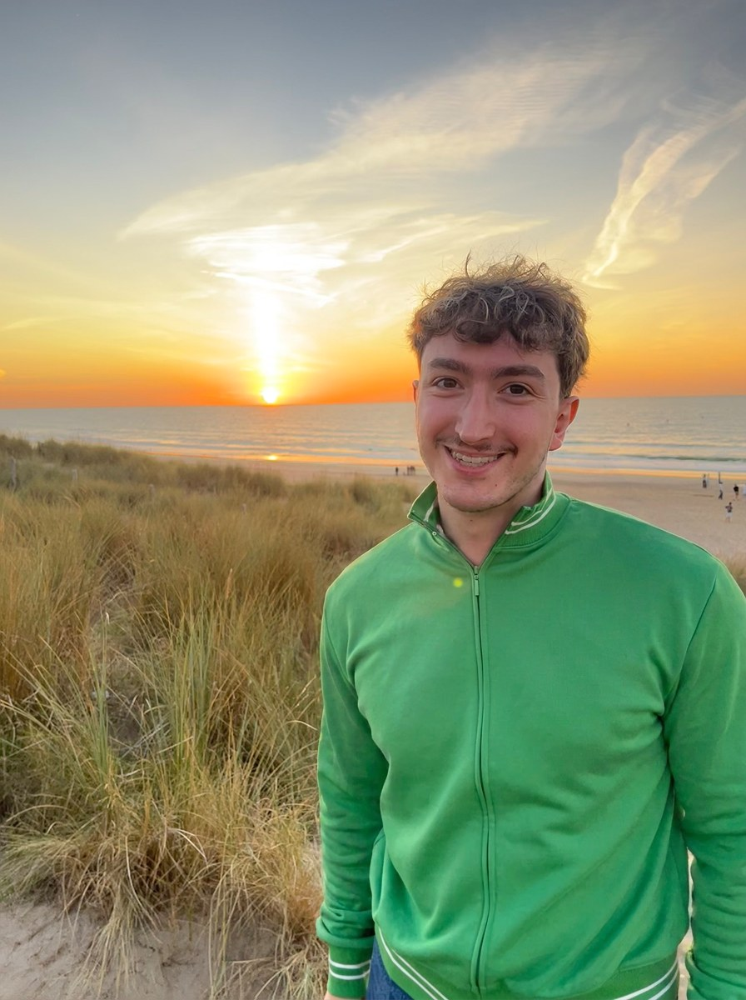

werk
8 projectenkerst in vier kleuren
bekijk campagne
over mij
neem contact op
hey, ik ben dylan.
Ik studeer Communicatie (afstudeerrichting PR & Reputation Management) aan Thomas More en heb een bachelor Media & Entertainment Business op zak.
Tijdens mijn stages bij Kinepolis Film Distribution en Hampton Bays werkte ik aan trailers, content, campagnes en Meta Ads. Daarnaast bouw ik mijn eigen kledingmerken.
woont inLiedekerke, België
talenNL · EN · FR
stagesKinepolis · Hampton Bays
toolsAdobe CC · Canva · Meta Ads
pr-otasi
Mijn perssite met fictieve persberichten en een blog.
lees de nieuwtjes